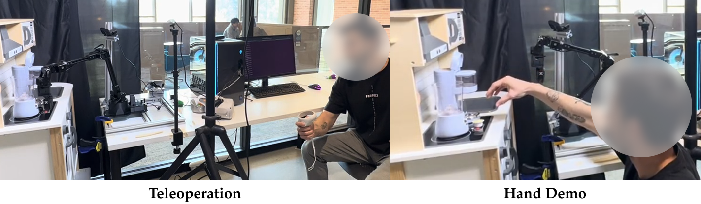

We introduce HAND, a simple and time-efficient method for teaching robots new manipulation tasks through human hand demonstrations.
Abstract
We hand the community HAND, a simple and time-efficient method for teaching robots new manipulation tasks through human hand demonstrations.
Instead of relying on task-specific robot demonstrations collected via teleoperation, HAND uses easy-to-provide hand demonstrations to retrieve relevant behaviors from task-agnostic robot play data.
Using a visual tracking pipeline, HAND extracts the motion of the human hand from the hand demonstration and retrieves robot sub-trajectories in two stages: first filtering by visual similarity, then retrieving trajectories with similar behaviors to the hand.
Fine-tuning a policy on the retrieved data enables real-time learning of tasks in under three minutes, without requiring calibrated cameras or detailed hand pose estimation.
Experiments in simulation and on real robots also show that HAND outperforms retrieval baselines by over $2 \times$ in task success rates.
HAND: Fast Robot Adaptation via Hand Path Retrieval
Sub-Trajectory Preprocessing: We first segment the hand demonstrations, $D_{\text{hand}}$, and the offline play dataset, $D_{\text{play}}$, into variable-length sub-trajectories using a simple heuristic based on proprioception.
Visual Filtering: Before retrieving sub-trajectories with paths, we first run a visual filtering step to ensure that the sub-trajectories we retrieve will be task-relevant. We use an object-centric visual foundation model, namely DINOv2, to first filter out sub-trajectories performing unrelated tasks with different objects.
Retrieving Sub-Trajectories: We then employ S-DTW to match the target sub-trajectories, $T_{\text{hand}}$, to the set of visually filtered segments, $T_{\text{play}}$.
Adapter Fine-tuning: We leverage parameter-efficient fine-tuning using task-specific adapters—small trainable modules that modulate the behavior of the frozen base policy.
Loss Re-Weighting: To prioritize the most behaviorally aligned examples, we reweight the BC loss with an exponential term following Advantage-Weighted Regression where each sub-trajectory is weighted based on its similarity (from S-DTW) to the hand demonstration.
Real Robot Evaluation Tasks
We evaluate HAND on 5 different real robot tasks: Reach Block, Push Button, Close Microwave, Put Keurig in Coffee Machine, and Carrot Blender. The last two are long-horizon tasks, requiring more than 100 timesteps of execution.
Real-world single task retrieval experiment plotting # successes out of 10 of $\pi_\text{base}$, STRAP, and HAND.
Qualitative Retrieval Results from IPhone Hand Demonstration
HAND works with demos from unseen environments.
We visualize the top sub-trajectory match of STRAP, HAND without visual filtering (HAND(-VF)), and HAND on two out-of-domain demonstrations recorded from an iPhone camera, showing approaching a Keurig coffee pod and putting it into the machine. Only HAND's top match is relevant for both hand demonstrations.
User Study
HAND enables real-time, data-efficient policy learning of long-horizon tasks.

Two users, unfamiliar with HAND, are asked to collect trajectories either via teleoperation (Left) or using their hands (Right) for the $\texttt{Put Keurig in Coffee Machine}$ task.
HAND retrieval achieves an \todo{XX} success rate with the same amount of demonstrations using only \todo{XX} less time.
We conduct a small-scale user study to demonstrate HAND's ability to learn robot policies in real-time.
From providing the hand demonstration (Left), to retrieval and fine-tuning a base policy (Middle), to evaluating the policy (Right), we show that HAND can learn to solve the $\texttt{Blend Carrot}$ task with over $70\%$ success rate in less than 3 minutes.